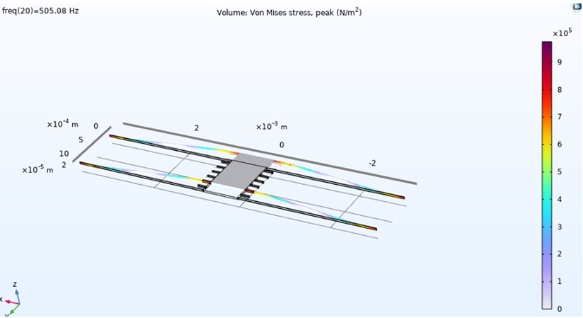
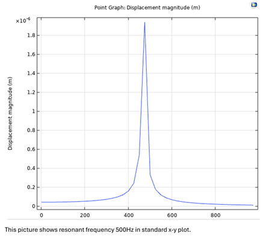

← projects / MEMS Differential Capacitive Accelerometer
MEMS Differential Capacitive Accelerometer
Overview
Designed and simulated a differential capacitive accelerometer on a silicon-on-insulator (SOI) substrate. The device uses a central proof mass suspended by folded tethers, with interdigitated sense electrodes on either side forming a differential capacitor pair. An applied acceleration displaces the proof mass, producing a differential capacitance change C₀ ± ΔC that is read out by interface electronics.
The full analytical design was validated in COMSOL Multiphysics, targeting a sub-6×6 mm² footprint with 500 Hz sensor bandwidth and Brownian noise floor below 20 µg/√Hz.
Target Specifications
| Parameter |
Target |
| Brownian Noise Equivalent Acceleration (BNEA) |
< 20 µg/√Hz |
| Capacitive Sensitivity (S) |
0.2 pF/g |
| Pull-in Voltage (VPULL-IN) |
> 2.0 V |
| Quality Factor (Q) |
0.7 |
| Capacitive Gap (d) |
2 µm |
| Device Layer Thickness (h) |
40 µm |
| Overall Size |
< 6×6 mm² |
| Sensor Bandwidth (BW) |
500 Hz |
Design Approach
The analytical design flow covered:
- Proof mass: Sized from BNEA and bandwidth constraints using the spring-mass-damper model
- Tethers: Folded-beam spring constant k computed to hit target resonant frequency; validated against COMSOL modal analysis (simulated fˇ = 505 Hz)
- Sense electrodes: Interdigitated finger geometry sized for 0.2 pF/g sensitivity at 2 µm gap
- Squeeze-film damping: Air damping computed analytically (Couette and Poiseuille flow contributions) to achieve Q = 0.7 — critically damped for fast settling
- Pull-in voltage: Verified electrostatic stability; VPULL-IN > 2.0 V maintained across process variation
- Transient response: % overshoot and settling time computed from Q and bandwidth; validated against COMSOL time-domain simulation

COMSOL Multiphysics — von Mises stress distribution across proof mass and folded tethers under 1g acceleration.

COMSOL modal analysis — proof mass displacement magnitude confirming resonant frequency at 505 Hz.
Tools & Technology
- Technology: Silicon-on-Insulator (SOI) MEMS, 40 µm device layer
- Simulation: COMSOL Multiphysics (structural mechanics, electrostatics)
- Analytical design validated in MATLAB / hand calculations